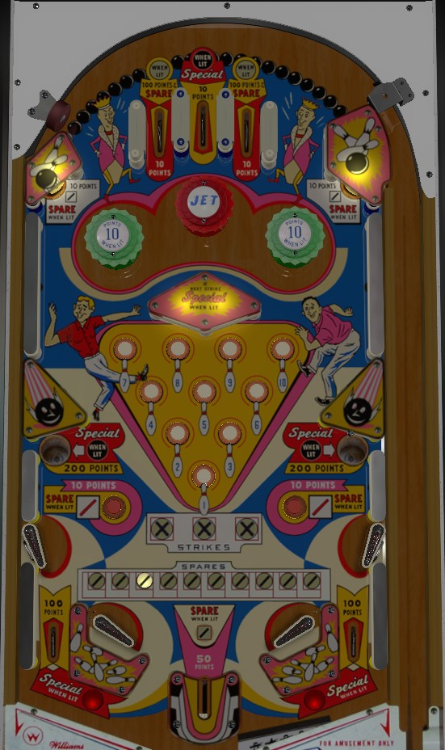

Not to be confused with King Pin (Gottlieb, 1973) or Kingpin (Capcom, 1996).
Strikes: press lit rollover buttons in the center of the table to unlight them. Unlight all 10 to score a Strike. Making 2 Strikes lights the gobble holes on the left and right alternately for Special based on 1-point switch hits. Making a 3rd Strike scores an instant Special and lights the center top lane for Special. Rollover buttons always score 1 point. The top center lane scores 10 points.
Spares: several features around the game are lit alternately for Spares, including the left and right top lanes, upper left and right standup targets, lower left and right rollover buttons, and the bottom center kicker. The top lanes score 100 points when lit for Spare, or 10 otherwise; the bottom center kicker always scores 50 points; all other Spare targets score 10 points. Making 10 Spares over the course of the game lights the out lanes alternately for Special. Alternately lit features toggle every time a 1-point switch is hit.
Left and right pop bumpers are lit for 10 points alternately every time a 1-point switch is scored. Left and right gobble holes end your current ball; they score 200 points, and are lit alternately for Special after 2 Strikes have been scored. Out lanes score 100 points. There is no end of ball bonus or extra ball feature. Tilt ends game.
